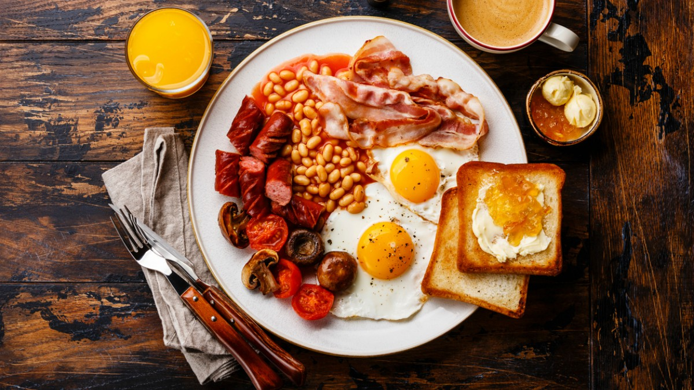
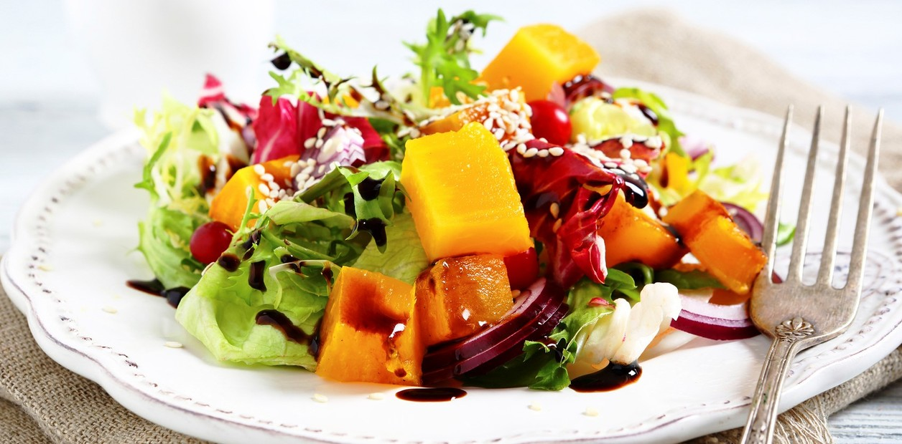
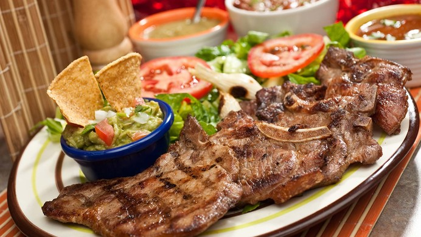
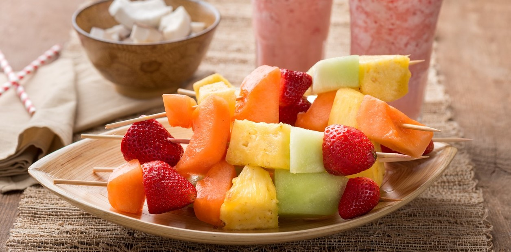
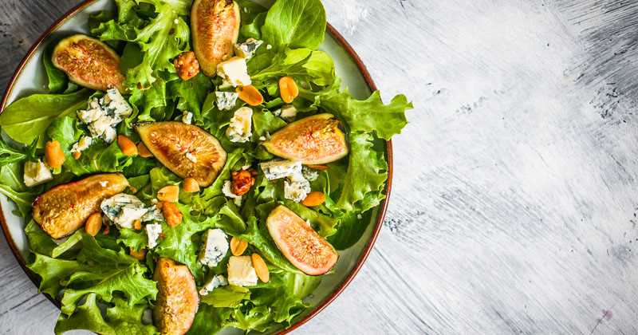

<ion-header>
  <ion-toolbar color="secondary">
      <ion-buttons slot="start">
          <ion-menu-button></ion-menu-button>
      </ion-buttons>
    <ion-title>Dieta</ion-title>
  </ion-toolbar>
</ion-header>


<ion-content>
  

  <div class="contedorDeTodo">
    <h1 style="text-align: left; width: 90%;"> Dieta actual</h1>

    <div class="alimeto"  routerLink="/menu/cont1/saltos/alimentos/1">
     <h2>Desayuno</h2>
     
    </div>
    
    <div class="alimeto"  routerLink="/menu/cont1/saltos/alimentos/2">
      <h2>Mediodía</h2>
      
    </div>

    <div class="alimeto"  routerLink="/menu/cont1/saltos/alimentos/3">
      <h2>Comida</h2>
      
    </div>
    <div class="alimeto"  routerLink="/menu/cont1/saltos/alimentos/4">
      <h2>Merienda</h2>
      
    </div>
    <div class="alimeto"  routerLink="/menu/cont1/saltos/alimentos/5">
      <h2>Cena</h2>
      
    </div>

  </div>
</ion-content>

